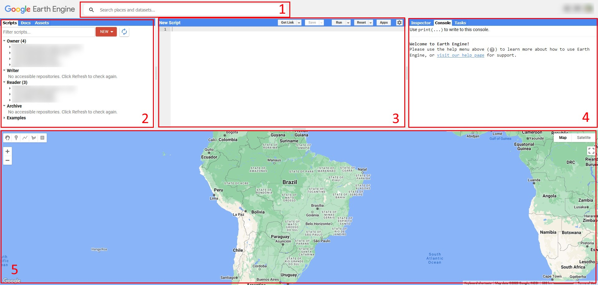
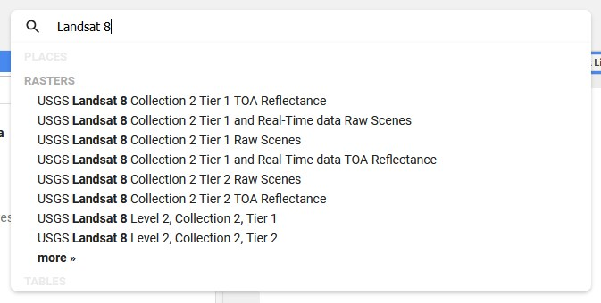
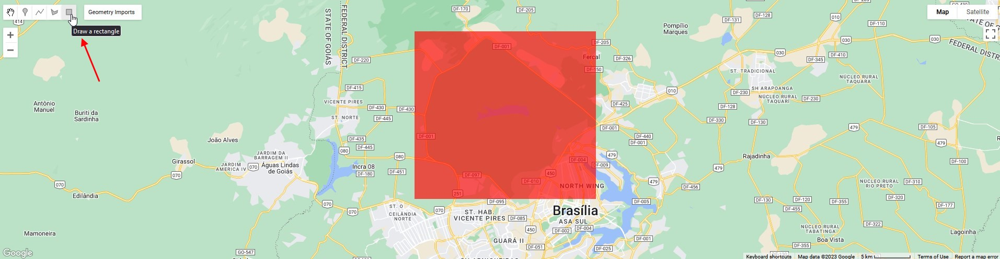
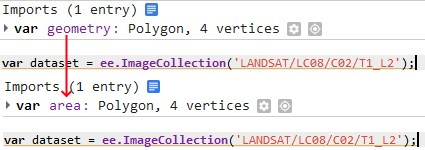
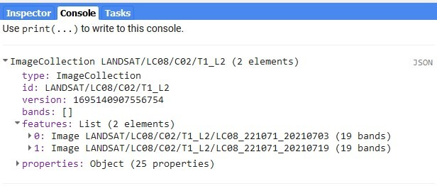
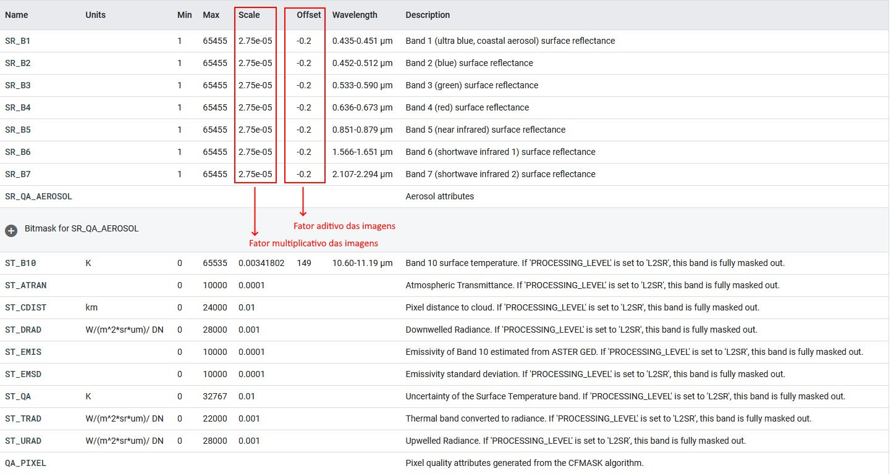
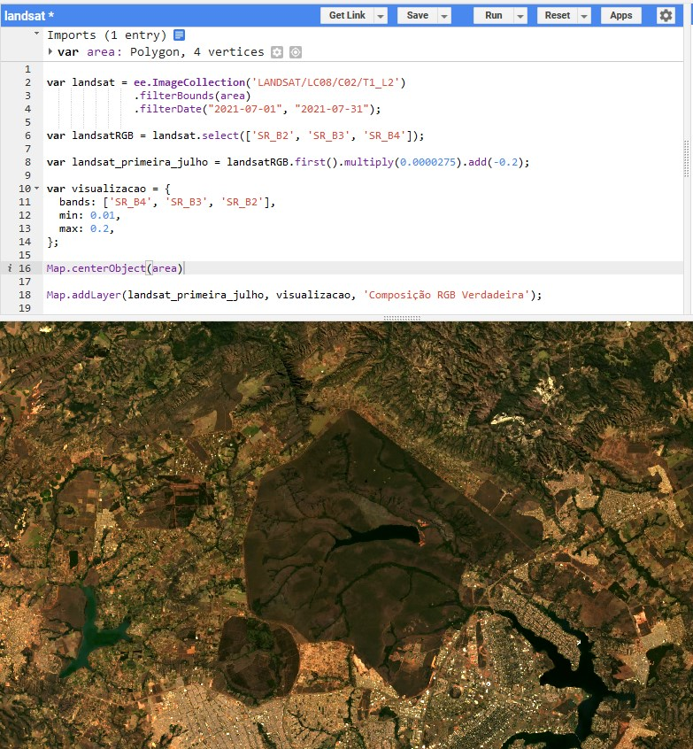

Principios básicos
A interface web da plataforma Earth Engine
Ao acessar o link https://code.earthengine.google.com/ o usuário terá acesso ao ambiente web da plataforma Earth Engine.

- Barra de busca: aqui você poderá buscar coleções de imagens, funções e localizações no mapa.
- Painel de navegação: é aqui onde o usuário organiza suas pastas e arquivos (aba Scripts). A aba Docs disponibiliza acesso rápido à documentação de funções da plataforma. Na aba Assets o usuário pode fazer o upload de imagens e outros dados de produção própria como shapefiles.
- Editor de código: é neste painel onde é escrito o código que deverá ser executado, e isto pode ser feito pressionando o botão Run.
- Console: a aba Console mostra resultados ao utilizar a função
print. A aba Inspector mostra valores inspecionados ao clicar nas camadas disponíveis no mapa. A aba Task mostra tarefas executadas tais como exportações de imagens, tabelas e shapefiles. - Visualizador de mapa: aqui são produzidas as imagens ao utilizar as funções relacionadas à plotagem de imagens e mapas. É neste painel também onde o usuario pode produzir vetores utilizando as ferramentas disponiveis no canto superior esquerdo.
Definição da coleção de interesse e filtros básicos
Por utilizar a linguagem de programação javascript, a definição de novas variáveis ou objetos na plataforma Earth Engine sempre se precederá do comando var:
// Exemplo
var a = 2;
var b = 3;
var c = a + b;
print(c)O primeiro passo para trabalhar com a plataforma Earth Engine é a definição de uma (ou mais) coleção de interesse. Uma lista completa de todas as coleções disponíveis na plataforma Earth Engine está disponível no link https://developers.google.com/earth-engine/datasets/catalog. Também estão disponíveis catálogos específicos para imagens Landsat, MODIS e Sentinel. Você também pode utilizar a barra de busca acima do editor de código para buscar coleções de interesse:

Isto se dá através da função ee.ImageCollection que aceita como argumento o código referente à coleção de interesse. O exemplo a seguir mostra a definição da coleção utilizando imagens Landsat 8 corrigidas com valores de reflectância da superfície terrestre, referenciada pelo código 'LANDSAT/LC08/C02/T2_L2'. Link para a coleção.
var landsat = ee.ImageCollection('LANDSAT/LC08/C02/T1_L2');Certamente não há necessidade de utilizar todas as imagens na coleção, portanto é importante definir uma faixa temporal e uma região de interesse. Utilize a ferramenta de retângulo e escolha uma área de interesse. Neste caso delimitou-se a região do Parque Nacional de Brasília:

Note que isto criou uma geometria nova no painel de edição de código chamada “geometry”. Você pode renomear esta geometria clicando no seu nome:

Agora podemos filtrar a coleção com base na região definida utilizando a função filterBounds que tem como argumento a área limite:
var landsat = ee.ImageCollection('LANDSAT/LC08/C02/T1_L2').filterBounds(area)Note que funções são aplicadas de maneira subsequente utilizando o ponto (.), que é o modo como as funções são concatenadas uma atrás da outra (se o objeto gerado permitir a aplicação da função). Por exemplo, o código:
ee.ImageCollection('LANDSAT/LC08/C02/T1_L2').filterBounds(area)pode ser lido como “acesse o objeto ee (a base Earth Engine), aplique a função ImageCollection com o argumento 'LANDSAT/LC08/C02/T1_L2' e em seguida aplique a função FilterBounds com o argumento area”.
Em seguida, podemos filtrar a coleção por faixa temporal usando a função filterDate que tem como argumentos a data inicial e a data final. Como exemplo, vamos escolher imagens apenas no mês de julho de 2023.
var landsat = ee.ImageCollection('LANDSAT/LC08/C02/T1_L2').filterBounds(area).filterDate("2021-07-01", "2021-07-31");
print(landsat)Se você precionar o botão Run utilizando o código anterior, você poderá ver os detalhes da coleção no console. Observe que a coleção agora contem somente 2 imagens:

Muitas vezes você verá o código distribuído verticalmente:
var landsat = ee.ImageCollection('LANDSAT/LC08/C02/T1_L2')
.filterBounds(area)
.filterDate("2021-07-01", "2021-07-31");
print(landsat)O código é essencialmente o mesmo, porém muitos optam pela distribuição vertical por questão de legibilidade.
Pausa: consultando detalhes das coleções
Antes de continuar, é importante demonstrar como lidar com os detalhes específicos das coleções disponíveis na plataforma. Continuando com imagens Landsat 8 como exemplo, acesse o link da coleção e observe o painel logo abaixo do cabeçalho. Este painel contém informações importantes sobre a aquisição, pré-processamento e detalhes sobre o formato das imagens. A aba Description contém as informações gerais sobre a coleção. A aba Bands descreve as bandas em detalhes, incluindo seus nomes (importante para selecionar bandas específicas). Esta aba é extremamente importante para a visualização e o processamento das imagens. Para economizar espaço de armazenamento, as imagens na plataforma geralmente são salvas em formatos contendo somente números inteiros (Int) e portanto passam por um pré-processamento para ajustar os valores. As bandas 1 a 7 das imagens Landsat 8, por exemplo, tem seus valores entre 1 e 65455 (Int16).

Para transformar estes valores para valores reais de reflectância, precisamos multiplicar as imagens pelo valor da coluna Scale e adicionar o valor da coluna Offset. Neste caso, portanto:
\[ Valor Real = Valor \times Scale + Offset \] Note que no caso das bandas termais estes valores são diferentes e que nem sempre o valor de Offset existe. É importante consultar esta aba antes de processar a coleção de interesse.
A aba Image Properties deste painel contem propriedades importantes especificas para cada imagem em uma coleção tal como valores de Path e Row, nível de processamento, etc. Por exemplo, a propriedade CLOUD_COVER descreve a porcentagem de cobertura de nuvens observada em cada imagem. Estas informações são uteis para filtrar coleções, por exemplo filtrando uma coleção para conter somente imagens com baixa porcentagem de cobertura de nuvens. Veremos como fazer isto em tópicos intermediários.
Exibição de imagens
Por questão de exemplo, vamos selecionar somente as bandas RGB da coleção filtrada utilizando a função select que aceita um nome de banda ou uma lista de nomes:
Em javascript listas são denotadas por nomes ou objetos entre colchetes ([ ]), por exemplo:
var bandas_rgb = ['SR_B2', 'SR_B3', 'SR_B4']var landsat = ee.ImageCollection('LANDSAT/LC08/C02/T1_L2')
.filterBounds(area)
.filterDate("2021-07-01", "2021-07-31");
var landsatRGB = landsat.select(['SR_B2', 'SR_B3', 'SR_B4']);Não precisamos das duas imagens do mês, então podemos selecionar a primeira delas usando a função first sem nenhum parâmetro:
var landsat = ee.ImageCollection('LANDSAT/LC08/C02/T1_L2')
.filterBounds(area)
.filterDate("2021-07-01", "2021-07-31");
var landsatRGB = landsat.select(['SR_B2', 'SR_B3', 'SR_B4']);
var landsat_primeira_julho = landsatRGB.first();E agora que sabemos como lidar com os valores das imagens nas coleções, podemos ajusta-los através das funções de multiplicação e adição multiply e add:
var landsat = ee.ImageCollection('LANDSAT/LC08/C02/T1_L2')
.filterBounds(area)
.filterDate("2021-07-01", "2021-07-31");
var landsatRGB = landsat.select(['SR_B2', 'SR_B3', 'SR_B4']);
var landsat_primeira_julho = landsatRGB.first().multiply(0.0000275).add(-0.2);
// Observação: notações cientificas podem ser usadas, isto é, 0.0000275 = 2.75e-05 É importante mencionar que sempre que for necessário realizar operações matemáticas a imagens isto deve ser feito utilizando as funções especificas da plataforma Earth Engine tais como multiply, add e divide:
// Errado, não funciona
var imagem_multiplicada = imagem * 2
// Correto
var imagem_multiplicada = imagem.multiply(2)Os meios tradicionais de realização de operações são reservados para objetos simples como números.
Antes de exibir a imagem, precisamos definir os parâmetros de visualização tais como as bandas a serem usadas na composição RGB e seus valores mínimos e máximos:
var visualizacao = {
bands: ['SR_B4', 'SR_B3', 'SR_B2'], // Sequencia de bandas RGB
min: 0.01, // Valores mínimo e máximo associados à intensidade das cores
max: 0.2, //
};Em javascript listas são denotadas por pares variável: valor separados por vírgula e inseridos entre chaves ({ }), como observado na variável visualizacao no bloco anterior.
Dicionários podem ser utilizados para definição de parâmetros dentro de funções
Finalmente, podemos centralizar o mapa na região de interesse usando a função Map.centerObject e adicionar a imagem usando a função Map.Addlayer que tem como parâmetros a imagem a ser exibida, os parâmetros de visualização e um nome para exibição na legenda. Juntando tudo até agora, temos o código a seguir:
var landsat = ee.ImageCollection('LANDSAT/LC08/C02/T1_L2')
.filterBounds(area)
.filterDate("2021-07-01", "2021-07-31");
var landsatRGB = landsat.select(['SR_B2', 'SR_B3', 'SR_B4']);
var landsat_primeira_julho = landsatRGB.first().multiply(0.0000275).add(-0.2);
var visualizacao = {
bands: ['SR_B4', 'SR_B3', 'SR_B2'],
min: 0.01,
max: 0.2,
};
Map.centerObject(area)
Map.addLayer(landsat_primeira_julho, visualizacao, 'Composição RGB Verdadeira');